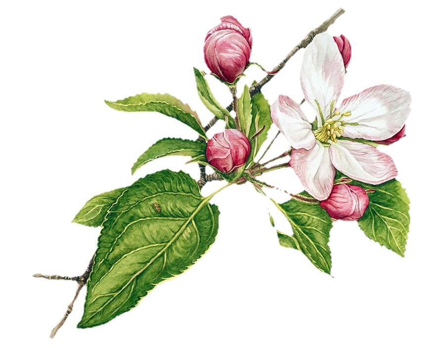
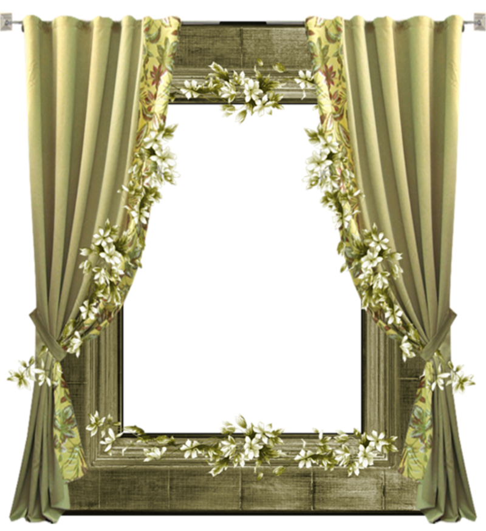
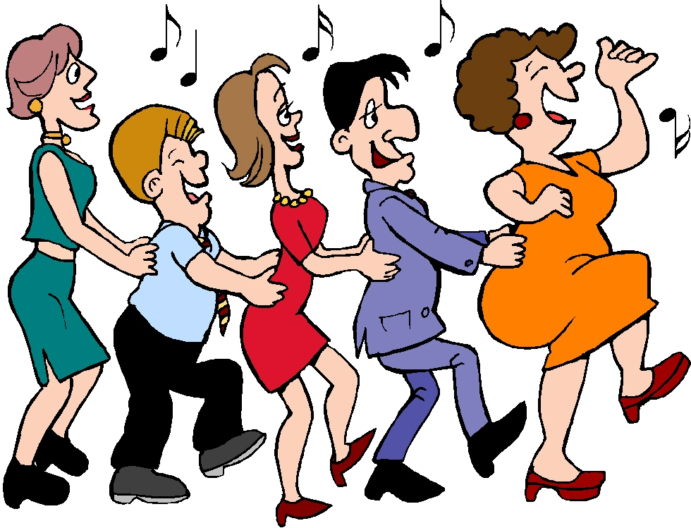
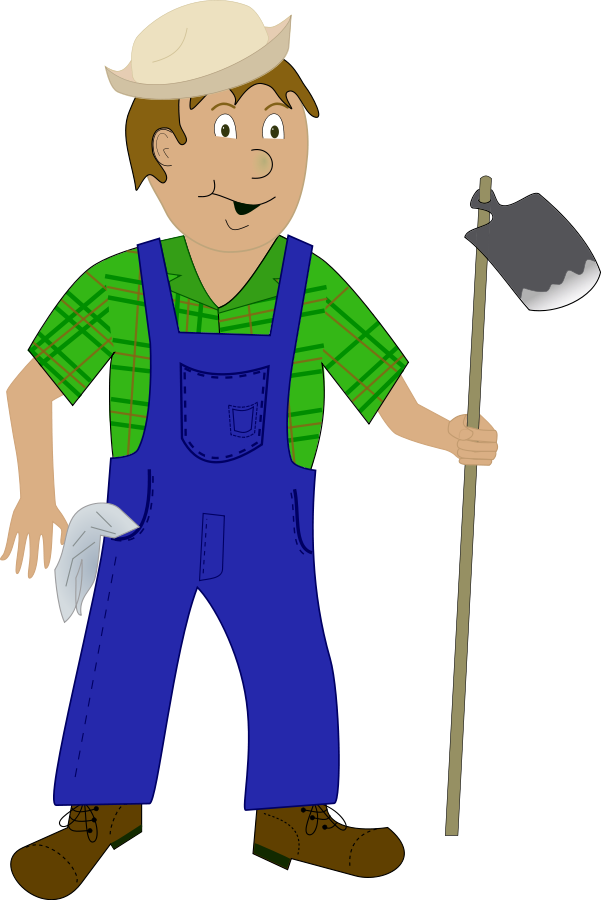

ه 🌻 و 🌻 ز
نصيحة ❗ اضغطوا على الأزرار الموضحة لسماع نطق الكلمة
انتبهوا لنطق حرف الهاء (الهِ) في أول الكلمة الزهرة 
الدرس

التزيين

و الآن مع حرف الواو (يسمى واو كذلك في السريانية) 😇
انتبهوا للفظ حرف الواو في بداية الكلمات التالية
الورقة

الستائر 
و أخيراً مع حرف الزاي (زِيْن) 😌🌼
لاحظوا حرف الزِيْن في بداية الكلمات التالية
الأغنية 
الزارع 
أحسنتم بالوصول إلى هنا 🥳🎊🎉 سِچُ (Sego) فخور بكم جداً 🤓😍
و الآن إلى تمرين عضلة المخ 😌
أجيبوا عن الأسئلة الآتية 👇🏻
تسمى الوردة في السريانية بـ
و من مفرداتها
المغني يغني
و الزرع يزرعه
الجزء الذي يكتب به على الدفتر يسمى بـ
ماذا نسمي هذا الأثاث المنزلي ؟